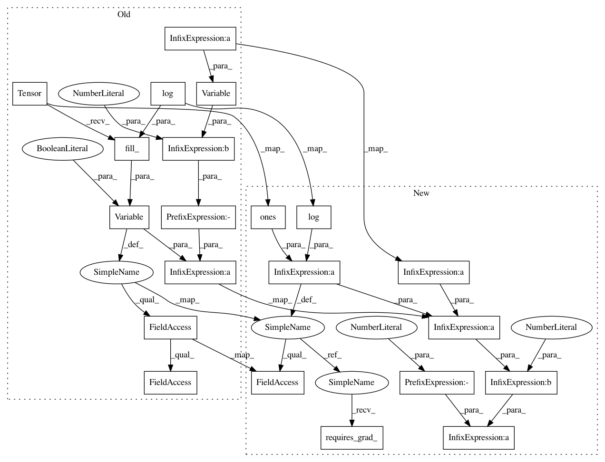

84fccd898c45c08279fb5c109e6e234f3a47588a,test/kernels/test_additive_kernel.py,TestAdditiveKernel,test_computes_sum_radial_basis_function_gradient,#TestAdditiveKernel#,51
Before Change
kernel_2 = RBFKernel().initialize(log_lengthscale=math.log(lengthscale))
kernel = kernel_1 + kernel_2
kernel.eval()
param = Variable(
torch.Tensor(3, 3).fill_(math.log(lengthscale)),
requires_grad=True,
)
diffs = Variable(a.expand(3, 3) - b.expand(3, 3).transpose(0, 1))
actual_output = (-(diffs ** 2) / (param.exp())).exp()
actual_output.backward(torch.eye(3))
actual_param_grad = param.grad.data.sum() * 2
output = kernel(Variable(a), Variable(b))
output.backward(gradient=torch.eye(3))
After Change
b = torch.Tensor([0, 2, 2]).view(3, 1)
lengthscale = 2
param = math.log(lengthscale) * torch.ones(3, 3)
param.requires_grad_()
diffs = a.expand(3, 3) - b.expand(3, 3).transpose(0, 1)
actual_output = (-0.5 * (diffs / param.exp()) ** 2).exp()
actual_output.backward(torch.eye(3))
actual_param_grad = param.grad.sum() * 2
kernel_1 = RBFKernel().initialize(log_lengthscale=math.log(lengthscale))
kernel_2 = RBFKernel().initialize(log_lengthscale=math.log(lengthscale))
In pattern: SUPERPATTERN
Frequency: 3
Non-data size: 21
Instances
Project Name: cornellius-gp/gpytorch
Commit Name: 84fccd898c45c08279fb5c109e6e234f3a47588a
Time: 2018-05-03
Author: balandat@fb.com
File Name: test/kernels/test_additive_kernel.py
Class Name: TestAdditiveKernel
Method Name: test_computes_sum_radial_basis_function_gradient
Project Name: cornellius-gp/gpytorch
Commit Name: 84fccd898c45c08279fb5c109e6e234f3a47588a
Time: 2018-05-03
Author: balandat@fb.com
File Name: test/kernels/test_additive_kernel.py
Class Name: TestAdditiveKernel
Method Name: test_computes_sum_radial_basis_function_gradient
Project Name: cornellius-gp/gpytorch
Commit Name: 84fccd898c45c08279fb5c109e6e234f3a47588a
Time: 2018-05-03
Author: balandat@fb.com
File Name: test/kernels/test_rbf_kernel.py
Class Name: TestRBFKernel
Method Name: test_subset_active_computes_radial_basis_function_gradient
Project Name: cornellius-gp/gpytorch
Commit Name: 84fccd898c45c08279fb5c109e6e234f3a47588a
Time: 2018-05-03
Author: balandat@fb.com
File Name: test/kernels/test_rbf_kernel.py
Class Name: TestRBFKernel
Method Name: test_computes_radial_basis_function_gradient